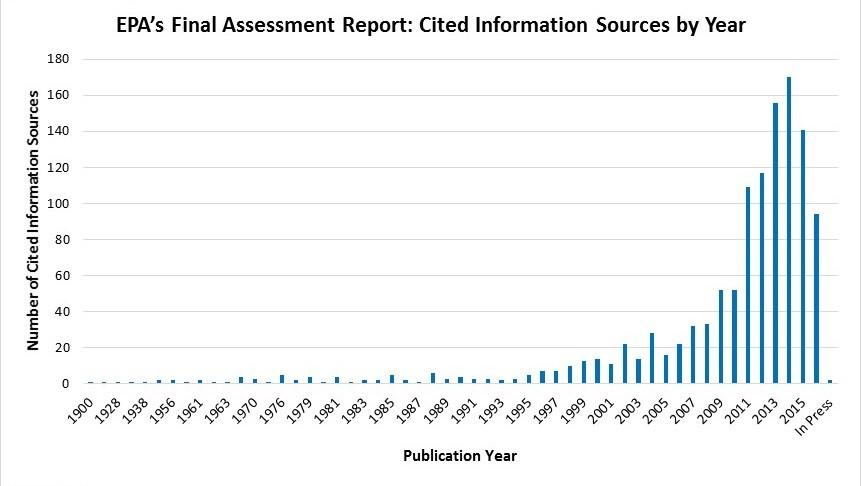

Questions and Answers about EPA's Hydraulic Fracturing Drinking Water Assessment
Hydraulic Fracturing Drinking Water Assessment Report
- What are the main findings of the assessment report?
- Have you found scientific evidence that hydraulic fracturing can impact drinking water resources?
- How many documented impacts have you found and where are they?
- How is the final assessment report different from the draft assessment report released in 2015?
- Why did EPA remove “no evidence of widespread, systemic impacts” from the assessment?
- Did EPA include data from Parker County, Dimock, and Pavillion in the final assessment?
- There are a lot of chemicals used in hydraulic fracturing that we don’t have any information for when it comes to toxicity. Why don’t we know more about these chemicals?
- How can decision makers use this assessment? Give some tangible examples?
Process of Developing the Assessment
- How did EPA evaluate literature, data and information used in the assessment?
- Did EPA consider the latest science/peer reviewed literature on hydraulic fracturing in its final assessment?
- Did EPA conduct new science as part of this study or is it just an assessment of existing scientific literature?
- Did EPA evaluate the recently released report from Wyoming concerning oil and gas operations and hydraulic fracturing in Pavillion, Wyoming?
General Study Background
- How does EPA's study and assessment define drinking water resources?
- What is hydraulic fracturing?
- What is the hydraulic fracturing water cycle?
Case Studies
Hydraulic Fracturing Drinking Water Assessment Report
Q: What are the main findings of the assessment report?
A: EPA found scientific evidence that activities in the hydraulic fracturing water cycle can impact drinking water resources under some circumstances. As part of the report, EPA identified conditions under which impacts from hydraulic fracturing activities can be more frequent or severe. The report also identifies uncertainties and data gaps that limited EPA’s ability to fully assess impacts to drinking water resources both locally and nationally. The final report provides the scientific foundation to help states and others better protect drinking water resources in areas where hydraulic fracturing is occurring or being considered.
The hydraulic fracturing water cycle describes the use of water in hydraulic fracturing, from water withdrawals to make hydraulic fracturing fluids, through the mixing and injection of hydraulic fracturing fluids in oil and gas production wells, to the collection and disposal or reuse of produced water.
Q: Have you found scientific evidence that hydraulic fracturing can impact drinking water resources?
A: Yes. EPA has found scientific evidence that activities in the hydraulic fracturing water cycle can impact drinking water resources under some circumstances. Impacts can range in frequency and severity, depending on the combination of hydraulic fracturing water cycle activities and local- or regional-scale factors. The following combinations of activities and factors are more likely than others to result in more frequent or more severe impacts:
- Water withdrawals for hydraulic fracturing in times or areas of low water availability, particularly in areas with limited or declining groundwater resources;
- Spills during the management of hydraulic fracturing fluids and chemicals or produced water that result in large volumes or high concentrations of chemicals reaching groundwater resources;
- Injection of hydraulic fracturing fluids into wells with inadequate mechanical integrity, allowing gases or liquids to move to groundwater resources;
- Injection of hydraulic fracturing fluids directly into groundwater resources;
- Discharge of inadequately treated hydraulic fracturing wastewater to surface water resources; and,
- Disposal or storage of hydraulic fracturing wastewater in unlined pits, resulting in contamination of groundwater resources.
The above conclusions are based on cases of identified impacts and other data, information, and analyses presented in the report. Cases of impacts were identified for all stages of the hydraulic fracturing water cycle. Identified impacts generally occurred near hydraulically fractured oil and gas production wells and ranged in severity, from temporary changes in water quality to contamination that made private drinking water wells unusable.
Q: How many documented impacts have you found and where are they?
A: EPA’s study was not designed to identify or quantify all impacts. EPA used cases of impacts (and other data, information, and analyses) to identify combinations of hydraulic fracturing water cycle activities and local- or regional-scale factors that are more likely than others to result in more frequent or more severe impacts on drinking water resources. Data gaps and uncertainties prevented EPA from calculating or estimating the national frequency of impacts on drinking water resources from activities in the hydraulic fracturing water cycle.
Q: How is the final assessment report different from the draft assessment report released in 2015?
A:
EPA revised the final assessment report in response to public comments and the SAB peer review report.
Significant revisions included the following:
(1) We provided clarification for major findings and specifically linked major findings to supporting information provided in individual chapters;
(2) We reviewed literature published since the completion of EPA’s external review draft report – over 200 citations were added as a result of this review;
(3) We added chemicals to the list of chemicals associated with hydraulic fracturing. Almost 400 chemicals were added, many of which reflect additional information for the chemical composition of produced water;
(4) We provided additional background on the characterization of drinking water resources in the United States;
(5) We better highlighted uncertainties and data gaps that limited EPA’s ability to fully assess impacts to drinking water resources both locally and nationally.
Q: Why did EPA remove “no evidence of widespread, systemic impacts” from the assessment?
A: EPA’s scientists included the following sentence in the 2015 draft assessment report: “We did not find evidence that these mechanisms have led to widespread, systemic impacts on drinking water resources in the United States.” That sentence was included in a section of the draft assessment report that also highlighted various limitations due to uncertainties and data gaps.
After receiving comments from the SAB, EPA scientists concluded that the sentence could not be quantitatively supported. Contrary to what the sentence implied, uncertainties prevent EPA from estimating the national frequency of impacts on drinking water resources from activities in the hydraulic fracturing water cycle. Additionally, EPA scientists and the SAB, came to the conclusions that the sentence did not clearly communicate the findings of the report.
Q: Did EPA include data from Parker County, Dimock, and Pavillion in the final assessment?
A: EPA received many public comments concerning potential impacts of hydraulic fracturing activities on drinking water resources in Parker County, Texas; Dimock, Pennsylvania; and Pavillion, Wyoming. The Agency’s independent Science Advisory Board also encouraged EPA to evaluate available information for each of these sites. EPA reviewed and evaluated publications related to these three sites. The final assessment report contains text boxes for each of the three sites, which provide background on the sites and present findings from available, peer-reviewed scientific publications.
Q: There are a lot of chemicals used in hydraulic fracturing that we don’t have any information for when it comes to toxicity. Why don’t we know more about these chemicals?
A: The lack of peer-reviewed toxicity data presents a significant limitation in assessing the severity of impacts on drinking water resources from activities in the hydraulic fracturing water cycle. Of the 1,606 chemicals considered in the final assessment report, 173 chemicals (11%) have chronic oral toxicity values that can be used for human health risk assessment. It should be noted that chemicals used in other industries also often lack a similar amount of human health data.
EPA’s ACToR database contains a large and disparate amount of public data on chemicals, ranging from federal toxicity reference values developed by EPA that have undergone extensive peer review to study and test results that have undergone little to no peer review. Of the 1,606 chemicals considered in the final assessment report, 735 (46%) have at least some relevant public data available in ACToR (including some data-poor chemicals), which may help to fill data gaps in the ongoing effort to understand potential hazards of hydraulic fracturing chemicals.
Q: How can decision makers use this assessment? Give some tangible examples?
A: The final assessment report provides the scientific foundation to help states and others better protect drinking water resources in areas where hydraulic fracturing is occurring or being considered. As part of the report, EPA identified conditions under which impacts from hydraulic fracturing activities can be more frequent or severe. In the short-term, attention could be focused on these conditions to reduce vulnerabilities of drinking water resources to activities in the hydraulic fracturing water cycle. Ways to reduce the frequency or severity of impacts from activities in the hydraulic fracturing water cycle are described in the final assessment report when they were reported in the scientific literature, although no attempt was made to identify or evaluate best practices.
For example, Chapter 4 of the final assessment report describes how water management strategies can affect the frequency and severity of impacts on drinking water resources from hydraulic fracturing water withdrawals. These strategies include using hydraulic fracturing wastewater or brackish groundwater for hydraulic fracturing, transitioning from limited groundwater resources to more abundant surface water resources, and using passby flows to control water withdrawals. Chapter 4 also provides examples of where these strategies have been used.
The uncertainties and data gaps described throughout the final assessment report can be used to identify future efforts to further our understanding of the potential for activities in the hydraulic fracturing water cycle to impact drinking water resources and the factors that affect the frequency and severity of those impacts. Future efforts could include, for example, groundwater and surface water monitoring in areas with hydraulically fractured oil and gas production wells or targeted research programs to better characterize the environmental fate and transport and human health hazards associated with chemicals in the hydraulic fracturing water cycle.
General Study Background
Q: How does EPA’s study and assessment report define drinking water resources?
A: The study employs a broad definition of drinking water and is not limited to domestic wells or public water supplies. For this study, drinking water resources are defined as any water that now serves, or in the future could serve, as a source of drinking water for public or private use. This includes both surface water resources and groundwater resources. “Groundwater” includes water found underground, usually in aquifers, which can supply wells and springs. “Surface water” includes all water naturally open to the atmosphere, such as rivers, lakes, reservoirs, etc.
Q: What is the hydraulic fracturing?
A: Hydraulic fracturing is frequently used to enhance oil and gas production from underground rock formations and is one of many activities that occur during the life of an oil and gas production well. During hydraulic fracturing, hydraulic fracturing fluid is injected down an oil or gas production well and into the targeted rock formation under pressures great enough to fracture the oil- and gas-bearing rock. Hydraulic fracturing fluids typically consist mainly of water, a “proppant” (typically sand) that props open the newly-created fractures, and additives (usually chemicals) that modify the properties of the fluid for fracturing. After hydraulic fracturing, oil, gas, and other fluids flow through the fractures and up the production well to the surface, where they are collected and managed.
Q: What is the hydraulic fracturing water cycle?
A: The EPA studied the relationship between hydraulic fracturing for oil and gas and drinking water resources using the hydraulic fracturing water cycle. The hydraulic fracturing water cycle has five stages; each stage is defined by an activity involving water that supports hydraulic fracturing. The stages and activities of the hydraulic fracturing water cycle include:
- Water Acquisition: the withdrawal of groundwater or surface water to make hydraulic fracturing fluids;
- Chemical Mixing: the mixing of a base fluid (typically water), proppant (typically sand), and chemical additives at the well site to create hydraulic fracturing fluids;
- Well Injection: the injection and movement of hydraulic fracturing fluids through the oil and gas production well and in the targeted rock formation;
- Produced Water Handling: the on-site collection and handling of water that returns to the surface after hydraulic fracturing and the transportation of that water for disposal or reuse; and
- Wastewater Disposal and Reuse: the disposal and reuse of hydraulic fracturing wastewater.
Process of Developing the Assessment
Q: How did EPA evaluate literature, data and information used in the assessment?
A: EPA evaluated literature, data, and information considered for the assessment report according to the factors outlined by the EPA’s Science Policy Council in A Summary of General Assessment Factors for Evaluating the Quality of Scientific and Technical Information. The factors include: (1) applicability and utility, (2) evaluation and review, (3) soundness, (4) clarity and completeness, and (5) uncertainty and variability. We first evaluated all materials for applicability (e.g., did it fall within the scope of the assessment?). If applicable, the material was evaluated on the basis of the other four factors.
The assessment factors and guidelines allowed EPA to consider different sources of scientific and technical information, and ensured appropriate and consistent review and weight was given to the literature used in the study. We reviewed over 4,100 sources of information and ultimately cited a little over 1,200 including: published papers; technical reports; federal- and state-collected data sets; and results from peer reviewed agency research.
Q: Did EPA consider the latest science/peer reviewed literature on hydraulic fracturing in its final assessment?
A: Yes, EPA considered recent science as reflected in peer reviewed literature and other reports on hydraulic fracturing. The final assessment report cites just over 1,200 sources of data and information. Most of the literature referenced in the final assessment was published in or after 2010. More than 66% of the 1,200 sources of data and information cited in the final assessment report were published after 2010, the year in which Congress asked EPA to undertake this study, and approximately 20% were published after 2014. As a result, a rich set of information was used to develop the final assessment report.

Q: Did EPA conduct new science as part of this study or is it just an assessment of existing scientific literature?
A: Yes, EPA conducted new, original research projects that were described in the Study Plan and Progress Report. These research projects resulted in over 25 peer-reviewed technical reports or papers published in scientific journals. Results from the research projects were included in the final assessment report, which cites over 1,200 sources of data and information.
Q: Did EPA evaluate the recently released report from Wyoming concerning oil and gas operations and hydraulic fracturing in Pavillion, Wyoming?
A: Yes, EPA evaluated the recent report from the State of the Wyoming, Pavillion, Wyoming Area Domestic Water Wells Final Report and Palatability Study. Information and results presented in the report are incorporated into Chapter 6 on Well Injection and specifically cited in the text box providing background on Pavillion, Wyoming.
Case Studies
Q: Are you planning to do the prospective case studies?
A: No. The study is now complete. EPA was unable to find a suitable location for a prospective case study that met both the scientific criteria for a rigorous study and the business needs of potential partners. Since we were unable to identify suitable locations within the timeframe of the study, we did not conduct the prospective case studies.
In prospective case studies, research at the site begins before hydraulic fracturing occurs and continues during and after hydraulic fracturing activities. It was not possible to identify a location that met the scientific criteria necessary for a prospective case study as well as the business needs of our partners.